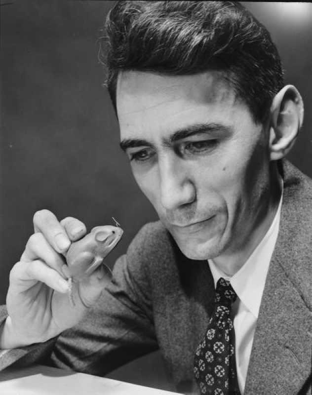
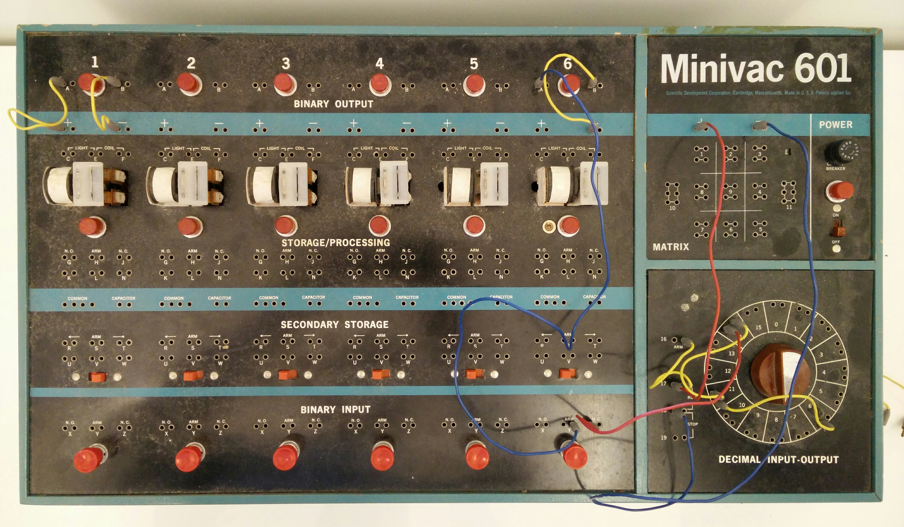

Logic and Switches
In 1932, Shannon entered the University of Michigan, where he was introduced to the work of George Boole. He graduated in 1936 with two bachelor's degrees: one in electrical engineering and the other in mathematics. In 1936, Shannon began his graduate studies in electrical engineering at MIT, where he worked on Vannevar Bush's differential analyzer, an early analog computer.[8] While studying the complicated ad hoc circuits of this analyzer, Shannon designed switching circuits based on Boole's concepts. In 1937, he wrote his master's degree thesis, A Symbolic Analysis of Relay and Switching Circuits.[9] A paper from this thesis was published in 1938.[10] In this work, Shannon proved that his switching circuits could be used to simplify the arrangement of the electromechanical relays that were used during that time in telephone call routing switches. Next, he expanded this concept, proving that these circuits could solve all problems that Boolean algebra could solve. In the last chapter, he presented diagrams of several circuits, including a 4-bit full adder.
Shannon's work on cryptography was even more closely related to his later publications on communication theory.[19] At the close of the war, he prepared a classified memorandum for Bell Telephone Labs entitled "A Mathematical Theory of Cryptography", dated September 1945. A declassified version of this paper was published in 1949 as "Communication Theory of Secrecy Systems" in the Bell System Technical Journal. This paper incorporated many of the concepts and mathematical formulations that also appeared in his A Mathematical Theory of Communication. Shannon said that his wartime insights into communication theory and cryptography developed simultaneously and that "they were so close together you couldn’t separate them".[20] In a footnote near the beginning of the classified report, Shannon announced his intention to "develop these results … in a forthcoming memorandum on the transmission of information."[21]
Information Theory
In 1948, the promised memorandum appeared as "A Mathematical Theory of Communication", an article in two parts in the July and October issues of the Bell System Technical Journal. This work focuses on the problem of how best to encode the message a sender wants to transmit. In this fundamental work, he used tools in probability theory, developed by Norbert Wiener, which were in their nascent stages of being applied to communication theory at that time. Shannon developed information entropy as a measure of the information content in a message, which is a measure of uncertainty reduced by the message. In so doing, he essentially invented the field of information theory.
Intrests
Outside of Shannon's academic pursuits, he was interested in juggling, unicycling, and chess. He also invented many devices, including a Roman numeral computer called THROBAC, juggling machines.[25] He built a device that could solve the Rubik's Cube puzzle.[6] Shannon designed the Minivac 601, a digital computer trainer to teach business people about how computers functioned. It was sold by the Scientific Development Corp starting in 1961.
Artificial Intelligence
Shannon's Mouse

"Theseus", created in 1950, was a mechanical mouse controlled by an electromechanical relay circuit that enabled it to move around a labyrinth of 25 squares.[2] The maze configuration was flexible and it could be modified arbitrarily by rearranging movable partitions.[2] The mouse was designed to search through the corridors until it found the target. Having travelled through the maze, the mouse could then be placed anywhere it had been before, and because of its prior experience it could go directly to the target. If placed in unfamiliar territory, it was programmed to search until it reached a known location and then it would proceed to the target, adding the new knowledge to its memory and learning new behavior.[2] Shannon's mouse appears to have been the first artificial learning device of its kind.[2]
Check out this video with a short appearance of Claude Shannon at 1:53 of the video:
Information, Uncertainty, Entropy
"My greatest concern was what to call it. I thought of calling it 'information,' but the word was overly used, so I decided to call it 'uncertainty.' When I discussed it with John von Neumann, he had a better idea. Von Neumann told me, 'You should call it entropy, for two reasons. In the first place your uncertainty function has been used in statistical mechanics under that name, so it already has a name. In the second place, and more important, no one really knows what entropy really is, so in a debate you will always have the advantage.“
— Claude Elwood Shannon Scientific American (1971), volume 225, page 180. Explaining why he named his uncertainty function "entropy".
Source: https://quotepark.com/authors/claude-elwood-shannon/

Biography
If you have some time, here is a great biography: